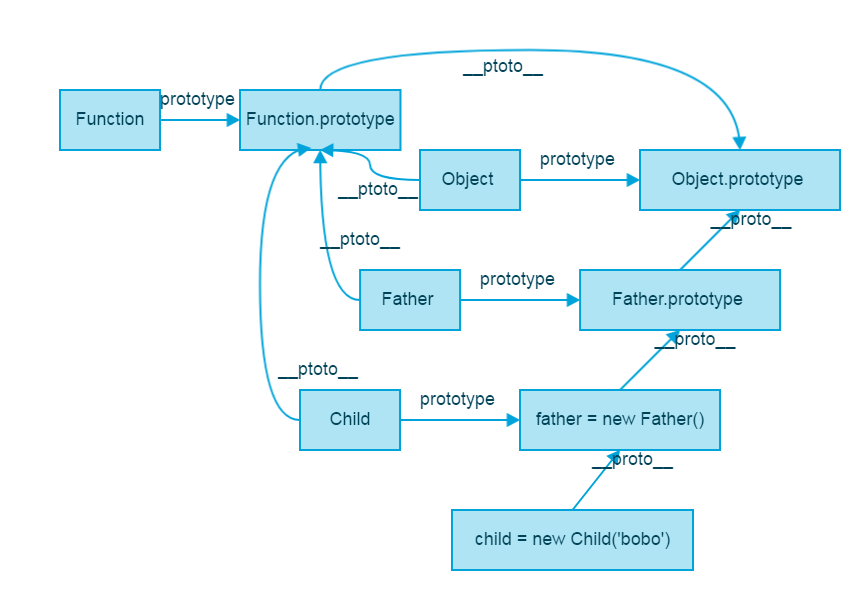
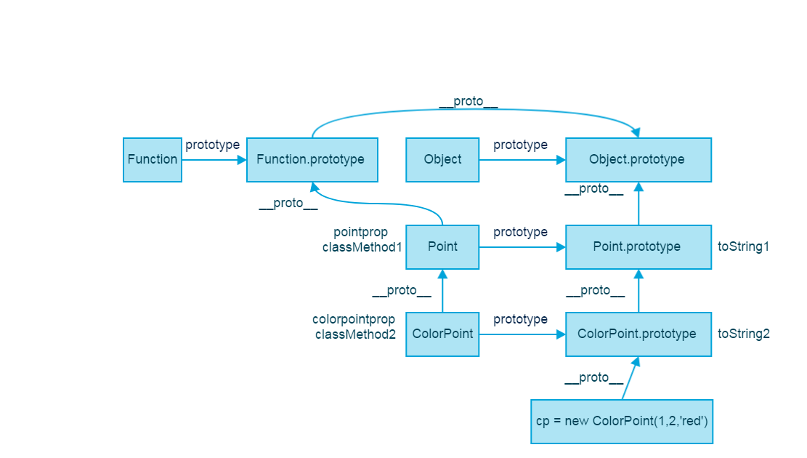

ES6:class

原以为class仅仅只是语法糖，发现在继承上跟原来的方式还是有很大的不同。简单分析记录一下。
es5中的继承
如下的实现了es5中的继承。
function Father() {
}
Father.prototype.fun1 = function() {
return 'father function';
};
function Child(name) {
this.name = name;
}
var father = new Father();
Child.prototype = father;
var child = new Child('bobo');
child.name; //"bobo"
child.fun1(); //"father function"
简单的画个图，分为2个部分介绍：
1）看看图的右边部分，当Father,Child作为构造函数，他们的prototype属性指向原型对象，因此，他们的实例，可以访问到这个对象的属性，child可以访问到fun1函数，是因为沿着原型链访问到了Father.prototype上的fun1。
child.fun1 === Father.prototype.fun1 //true
如果我希望为Child的实例增加公共的方法，则在Child.prototype上增加方法即可。但是这一步必须在Child.prototype = father之后，如果在这之前，会因为改变了原型对象，而被抛弃。
Child.prototype = ;
Child.prototype.fun2 = function() {}
//或者
father.fun2 = function() {}
2）图的左边部分，也很容易理解，Father,Child作为普通的函数，是Function对象的实例，因此，可以访问到Function.prototype上的属性。

如果理解到这里没有理解，就可以先停一停了，把es5的原型链搞明白了，才能懂得es6的class。
es6中的继承
如下所示，ColorPoint是Point的子类。
class Point {
static pointprop = 'Point类属性';
static classMethod1() {
return 'Point类方法';
}
constructor(x, y) {
this.x = x;
this.y = y;
}
toString1() {
return 'x:'+this.x+',y:'+this.y;
}
}
class ColorPoint extends Point {
static colorpointprop = 'ColorPoint类属性';
static classMethod2() {
return 'ColorPoint类方法';
}
constructor(x, y, color) {
super(x, y); // 调用父类的constructor(x, y)
this.color = color;
}
toString2() {
return this.color + ' ' + super.toString1(); // 调用父类的toString()
}
}
let p = new Point(1,2);
let cp = new ColorPoint(1,2,'red');
在类Point中，pointprop是类属性，classMethod1是类方法，x,y是实例属性，toString1是实例方法。ColorPoint也是一样，不赘述。
所谓的类方法，类属性是指不会被实例继承，而是直接通过类来调用。也可以叫做静态属性，静态方法。
Point.pointprop; //"Point类属性"
p.pointprop; //undefined
Point.classMethod1(); //"Point类方法"
p.classMethod1; //undefined
p.toString1(); //"x:1,y:2"
通过extends，ColorPoint对Point进行继承。如何继承的呢？extends给继承赋予了2层含义。还是通过原型链完成。
关系图如下：

对这个关系图进行解析，也分为2个部分：
1）对图片右侧进行解析：
子类ColorPoint的原型对象的__proto__属性指向父类的原型对象，也就是说：通过extends,使得子类的原型对象是父类的实例，且子类中的函数自动的添加到这个原型对象上。如图，可以看到ColorPoint.prototype上有toString2方法。
可以验证如下结果均为true
console.log(cp.__proto__===ColorPoint.prototype);
console.log(ColorPoint.prototype.__proto__===Point.prototype);
console.log(Point.prototype.__proto__===Object.prototype);
由于原型链的存在，可以使得ColorPoint实例可以访问Point的原型方法。
console.log(cp.toString1()); //"x:1,y:2"
console.log(cp.toString2()); //"red x:1,y:2"
有一个值得注意的点：
super(x, y);使得x,y成为子类的实例的方法，而不是在原型对象上。
2）对图片左侧：
在es5中，可以看到构造函数的__proto__属性都是指向Function.prototype。但是通过extends实现的继承中，构造函数之间存在着联系。
如下等式均为true
ColorPoint.__proto__===Point;
Point.__proto__===Function.prototype;
因此，ColorPoint类不仅仅可以调用自己的类属性，类方法，还能访问到Point的类属性和类方法。如下
ColorPoint.colorpointprop; //"ColorPoint类属性"
ColorPoint.classMethod2(); //"ColorPoint类方法"
ColorPoint.pointprop; //"Point类属性"
ColorPoint.classMethod1(); //"Point类方法"
终于说完啦，其实在我们平时常用的继承中，常用的还是右边的原型链，为了更好的理解extends，左边部分也需要理清楚！